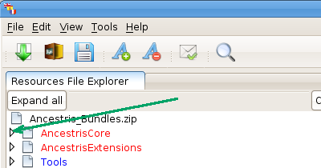

There, you have a tree view, which is collapsed, or partly collapsed. You can see that there are some names, in blue, and some in red. When a name is in blue it means that all the sentences and words that belong to that branch of the tree view, have been translated already. When you see the color red, it means that we have to translate something in it.

On the screenshot above, we don't have anything to translate in the project "Tools", but we have to work (to translate), in the AncestrisCore and AncestrisExtensions projects. Tools is in blue and the first two ones are in red.
We have to expand the first project: AncestrisCore. Click on the little triangle on the left (see the green arrow).
You should see the following screen.

We can see here, that the subdirectory "core", needs a translation, but not "api.editor", etc...
Click again on the little arrow, on the left of the word "core".

Repeat that process until you can see the image below.

Once there, we can see that "gedcom" is in blue, and it has been fully translated (the color blue, but also the 100% information). "actions", which is a subdirectory of "core", is in red and needs a translation (we can see that nothing has been translated, as we have a 0% already translated information). "core", is in red, because its subdirectory "actions" needs a translation. The sentences inside "core", have been fully translated as we have a 100% already translated information.
What to do next? Click on the line "action (0%)" (see the green arrow).
Once done, you should see the following screen.

Now we are ready to begin our translation.